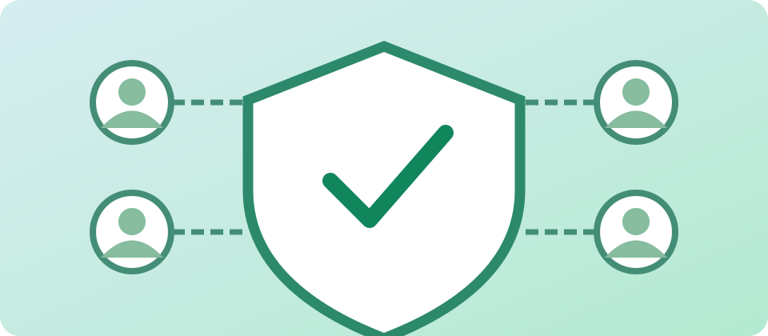
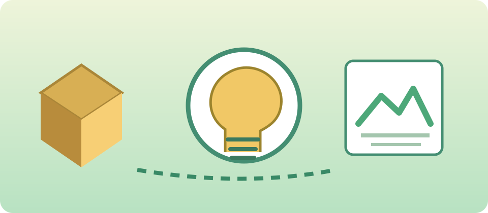

Vår modell
HGW föreslås fungera som samordningsplattform och avtalsbunden handelsagent. En oberoende ägare, köpare, besiktningsföretag, försäkringsgivare, garant, tullombud, transportör och betalningsleverantör kan samarbeta enligt transparenta avtal. HGW köper eller lagerhåller inte varor, förvarar inte kundmedel och övertar inte andra parters reglerade uppgifter. HGW:s förmedlingsprovision utgår endast vid en tydligt avtalsdefinierad och verifierad lyckad affär. Fristående tjänsteleverantörer kan ta separat betalt för avtalade tjänster.

Första delen: begagnat, återbruk och återvinning
Lokala marknadsplatser kan dela annonser efter uttryckligt tillstånd, med tydlig källhänvisning och snabba prisuppdateringar eller avpubliceringar. Köparen kan se översatt annons och uppdelad totalkostnad: ursprungligt varupris, besiktning, upphämtning, transport, tull, skatter, försäkring, leverans och samordning. Besiktning, frakt, tullombud, försäkring och leverans väljs fristående, förutom steg som krävs enligt lag. Inga externa annonsflöden är ännu licensierade eller aktiverade.

Andra delen: resurser, råvaror och tillgångar
En planerad marknadsplats för råmaterial, guld och ädelmetaller, livsmedel och grödor, energi, fastigheter, maskiner, produktiva tillgångar, produkter och tjänster. Tjänsten kan ta emot förfrågningar om köp, försäljning, byte och säkerheter. Verkliga lån, pantsättningar, värdepappersaffärer och förvaring får endast ske via behöriga aktörer med nödvändiga tillstånd. Äganderätt, rätt till överlåtelse och värdering måste kontrolleras före bindande avtal.
Kunskapstillgångar och immateriella rättigheter
Kategorierna omfattar patent, uppfinningar, upphovsrätt, registrerade formgivningar, programvara, algoritmer, AI-modeller, tekniskt kunnande och företagshemligheter. Försäljning eller överlåtelse av rättigheter måste skiljas från licens för användning eller en säkerhetsrätt. Kontrollera rättighetskedjan, tidigare licenser, territoriell giltighet, uppfinnar- och arbetsgivarrättigheter, exportrestriktioner och sekretess. Proprietär källkod och opublicerade uppfinningar läggs inte i öppna annonser.
Betalnings- och avräkningsalternativ
Parter kan föreslå kontanter, checkar, banköverföringar, betal- och kreditkort, licensierade betalförmedlare, lokala och internationella digitala plånböcker, fiatvalutor, digitala tillgångar, aktier och obligationer, fysiska tillgångar, produkter och tjänster. Att något har ett värde betyder inte att det automatiskt kan accepteras: ägande, värdering, överlåtbarhet, likviditet, reglering och genomförbar avräkning måste kontrolleras. Inga betalningar, plånboksförvaringar, bank- eller överföringsfunktioner är aktiverade.
Aktiverbar regelefterlevnad per jurisdiktion
För varje affär granskas relevanta jurisdiktioner för säljare, köpare, tillgångens plats, ursprung och destination, tjänster och betalningsvägar. Regler om registrering, tillstånd, tillämplig kundkännedom (KYC/KYB) och konsumentskydd aktiveras endast när verksamheten eller transaktionen omfattas. Obligatoriska dataskydds- och innehållsregler gäller även vid vanlig besökning. Okända, inaktuella, förbjudna eller motstridiga krav leder till stopp eller juridisk granskning, inte automatiskt godkännande. Expansion sker genom självständigt kontrollerade lokalt licensierade partner i stället för filialer i varje land.
Kooperativ struktur, likabehandling och styrning
Den föreslagna strukturen är en ideell organisation som äger ett kommersiellt holdingbolag, med juridiskt självständiga forsknings-, rättsinformations- och medieverksamheter efter behov. Detta är en målsättning, inte en bekräftad registrerad koncern. Styrningen ska eftersträva jämlik representation, direktröstning, återkallelig flytande delegering, verifierbara resultat, integritet, kryptering och oberoende revision. Verkliga omröstningar och medlemsrättigheter är inte aktiva.
Driftskostnader och incitament
Plattformens intäkter utgörs inte av tredjepartssäljares totala varuförsäljning. Efter driftkostnader, skatter, återbetalningar, skulder och rimliga reserver kan ett lagligen utdelningsbart överskott avsättas till särskilda prestationsincitament för individer och institutioner samt allmänna incitament för berättigade medarbetare. Procentsatser och beräkningsregler kräver medlemsbeslut, oberoende granskning, överklaganden och revision.
Vad innebär framgång?
Framgång mäts genom självständigt verifierade avslutade affärer, unika hinder som faktiskt undanröjts, tjänsternas kvalitet och effektivitet, lägre jämförbara totalkostnader, kortare ledtider, öppen redovisning av avgifter, vänligt bemötande och jämlik kundservice. Antalet annonser eller länder ersätter inte verklig nytta. Varje rapporterat mått kräver nämnare, underlag, jämförelser, datum och möjlighet att invända mot fel.
Status för genomförandet
GitHub Pages innehåller prototyper för marknadsplatsens båda delar, framgångsbaserad förmedlingsprovision, kooperativ incitamentsfördelning, kunskapstillgångar, demonstrationsmodell för regelefterlevnad och resultatindikatorer. Det finns ännu ingen verifierad global partnerkedja, aktiv betalnings- eller identitetskontroll, juridiskt bildad ideell holdingstruktur eller produktionssatta transaktioner. Verklig drift kräver avtal, tillstånd, stark säkerhet och övervakade pilotprojekt.
Öppna interaktiva prototyper
Dessa underliggande arbetsversioner är ännu främst på arabiska. Den här sidan ger en svensk översikt över syfte, begränsningar och policyer.